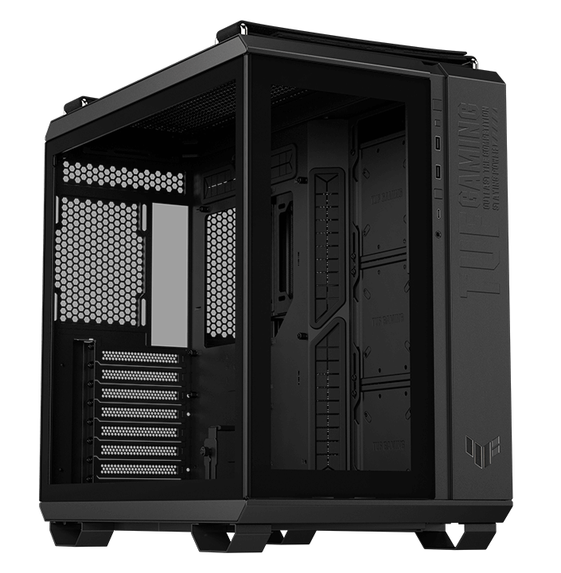

Case
The ASUS TUF GT502 case exemplifies robust design and functionality in gaming hardware.
With its durable construction and ample space for high-performance components, it ensures optimal cooling and performance during intense gaming sessions.
Featuring a sleek, gamer-centric aesthetic, it combines style with practicality, offering easy access to ports and efficient cable management.
The GT502's thoughtful design caters to the needs of gamers, enhancing both gameplay experience and hardware longevity.
It stands as a testament to ASUS's commitment to quality and innovation in gaming PC cases.